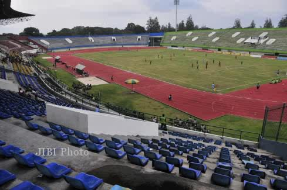
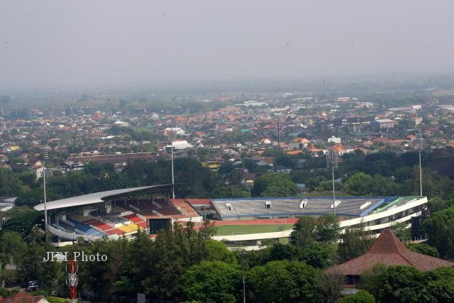

Selamat Datang di Kelurahan Manahan
Stadion Manahan
Mengenai Stadion Manahan
Stadion Manahan Merupakan Ikon Manahan. Stadiun Manahan adalah sebuah stadion sepak bola yang berada di kota Surakarta, Jawa Tengah, Indonesia. Stadion berkapasitas 35.000 penonton ini merupakan markas dari klub Persis Solo. Manahan merupakan stadion pertama di Indonesia yang menjadi tuan rumah event olahraga difabel terbesar di Asia Tenggara ASEAN Paragames 2011. Stadion ini diresmikan pada tanggal 21 Februari 1998 oleh Presiden Republik Indonesia, Soeharto. Saat ini sebagian besar digunakan untuk sepakbolapertandingan dan digunakan sebagai tempat rumah Persis Solo. Dilihat dari letak geografis, Stadion Manahan di Solo cukup strategis. Berdiri megah di tengah-tengah pusat kota, berdekatan dengan bandara, hotel, jalan raya dan pusat perbelanjaan menjadikan Stadion Manahan sebagai salah satu yang paling representatif dalam menggelar event olahraga skala nasional dan internasional olahraga. Stadion ini terletak di pusat kota Solo, tepatnya di Jalan Adi Sucipto, Manahan, Banjarsari, Solo. Berjarak 9 kilometer dari Bandara Internasional Adisumarmo September 2008, stadion Manahan terpaksa ditutup karena tengah dilakukan renovasi stadion. Proyek renovasi drainase lapangan yang menelan biaya sekitar 1,6 miliar rupiah adalah untuk menghilangkan image negatif dari stadion Manahan sebagai stadion pelanggan banjir. Semua permukaan lapangan mengalami perombakan dan perbaikan. Rumput hijau yang menutup permukaan lapangan, semuanya dicabut digantikan dengan rumput jenis baru. Jenis rumput Dactylon Cynodon (rumput bermuda) sengaja didatangkan dari Batam untuk ditanam di lapangan stadion Manahan. Sedangkan konstruksi drainase lapangan Manahan yang terdiri dari pipa-pipa dan kain filter pasir, terpaksa didatangkan dari negara tetangga, Malaysia.
Untuk menutup permukaan lapangan, dibutuhkan pasir sebanyak 1600 m3. Pasirnya sendiri didatangkan dari pantai Samas Yogyakarta, yang tidak banyak memiliki kandungan garam. Dari proyek renovasi tersebut, akhirnya stadion Manahan berhasil melepas predikat buruknya sebagai stadion pelanggan banjir. Sekarang, meski hujan deras mengguyur dari atas stadion, lapangan Manahan tidak akan lagi tampak genangan air yang bisa menyebabkan banjir. Hal ini pun menghapus julukan stadion Manahan yang sebelumnya kerap disebut stadion pelanggan banjir.
Juli 2009, setelah menunggu hingga berbulan-bulan, akhirnya seluruh rangkaian renovasi stadion Manahan telah rampung dikerjakan. Stadion Manahan pun kembali dibuka dan difungsikan. Pekan Olah Raga Provinsi Jawa Tengah (PORPROV JATENG) 2009, menjadi event pertama yang digelar di stadion Manahan pasca stadion tersebut mengalami renovasi.

Stadion Manahan Surakarta adalah persembahan dari yayasan Ibu Tien Soeharto. Pembangunannya dimulai pada tahun 1989 dengan menggunakan lahan seluas 170.000 m2 dan luas bangunan 33.300 m2. Butuh waktu 9 tahun untuk mengubah lahan kosong menjadi Stadion Manahan kokoh bangunan. Dan tepat pada hari Sabtu 21 Februari 1998, stadion Manahan akhirnya diresmikan oleh Presiden Republik Indonesia, H.M.Soeharto.
- Luas area komplek Stadion 170.000 m².
- Luas bangunan Stadion 33.300 m².
- Ukuran lapangan Stadion 75 x 111 m².
- Jenis rumput Dactylon Cynodon (rumput bermuda).
- Lintasan lari, atletik, dan lompat jauh.
- Gerbang masuk area komplek Stadion 5 buah.
- Pintu masuk Stadion 4 buah.
- Pintu masuk penonton di tribun 24 buah.
- Jarak pagar ke penonton 20 m.
- Daya penerangan 53.000 watt.
Fasilitas
- Di tribun tertutup terdapat ruang kesehatan, ruang sekretariat, ruang wartawan, ruang konfrensi pers, ruang wasit, 2 ruang ganti pemain lengkap dengan toilet dan ruangan pemanasan pemain.
- Total toilet di tribun penonton 32 unit.
- Di bawah tribun Stadion terdapat perkantoran pengelola Stadion, kantor KONI Surakarta, kantor KPU Kota Surakarta, kantor EXA International, Kantor Tarung Drajat, Kantor Granat. Juga terdapat ruang latihan Yudo dan tenis meja..
- Jenis rumput Dactylon Cynodon (rumput bermuda).
- Luas area parkir Stadion Manahan mampu menampung 2.300 motor dan 300 mobil..
- Komplek Gelora Manahan tersedia lapangan tenis, lapangan bisbol, sirkuit motor, balap sepeda (Velodrome), lapangan voli, basket, bulutangkis, tenis meja, ruang biliar, 3 lapangan sepak bola dan(GOR)Serbaguna.

Event Olahraga
- 1999 : Puncak peringatan Hari Olahraga Nasional (HAORNAS) ke XVI.
- 2000 : Home base pertandingan kandang klub Pelita Solo (sampai dengan tahun 2002).
- 2003 : Home base pertandingan kandang klub Persijatim Solo FC (sampai dengan tahun 2006).
- 2006 : Home base pertandingan kandang klub Persis Solo (sampai dengan sekarang).
- 2006 : Babak 8 besar dan Final Liga Indonesia 2005/2006.
- 2007 : Babak penyisihan grup Liga Champions Asia 2007 (Persik Kediri).
- 2007 : Pusat pelatihan timnas Indonesia jelang Piala Asia 2007.
- 2008 : Babak 8 besar Liga Indonesia 2007/2008.
- 2009 : Pembukaan Pekan Olah Raga Provinsi Jawa Tengah (PORPROV JATENG) 2009.
- 2010 : Babak semifinal dan final Liga Divisi Utama 2009/2010.
- 2010 : Babak final Piala Indonesia 2010.
- 2010 : Tuan Rumah Piala AFF U-16.
- 2011 : Pembukaan kompetisi Liga Primer Indonesia 2011.
- 2011 : Home base pertandingan kandang klub Solo FC.
- 2011 : Babak semifinal dan final Liga Divisi Utama 2010/2011.
- 2011 : Tuan rumah ASEAN ParaGames.
- 2011 : Pusat pelatihan dan uji coba Internasional timnas Indonesia jelang PPD 2014.
- 2012 : Final Inter Island Cup 2012.
- 2013 : AFC Cup, di gunakan untuk laga Home Persibo Bojonegoro.
- 2014 : Semifinal Inter Island Cup 2014.
- 2014 : Tuan Rumah PRAPON Jateng VS Timnas U-19.
- 2014 : Home Base Timnas U-23.
Sumber : Wikipedia.org
16 Februari 2013